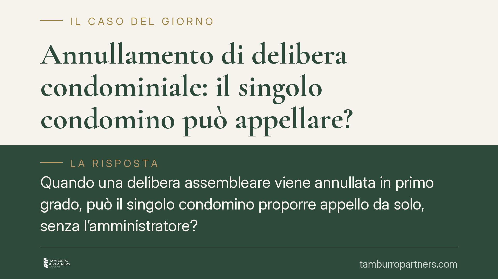

Annullamento di delibera condominiale: il singolo condomino può appellare?
Quando una delibera assembleare viene annullata in primo grado, può il singolo condomino proporre appello da solo, senza l'amministratore? Secondo quanto riportato da una recente pronuncia di legittimità, chi è intervenuto solo per sostenere la difesa dell'ente non ha un autonomo potere di impugnare la sentenza. Una distinzione tecnica con effetti pratici rilevanti sulla gestione delle liti condominiali.

Il caso
Una delibera dell'assemblea viene impugnata e, in primo grado, il giudice la annulla. In quel giudizio, accanto all'amministratore che difende la validità della decisione, interviene anche un singolo condomino interessato a mantenerla in piedi. Dopo la sconfitta, l'amministratore non impugna. Lo fa, da solo, il condomino intervenuto. La questione è se quell'appello sia ammissibile.
Nota di trasparenza. Circola il riferimento a un'ordinanza della Corte di Cassazione (n. 20398/2026, 17 giugno 2026). Al momento non siamo in grado di confermarne numero, data e contenuto: il dato va trattato come da verificare e sarà riscontrato sulle fonti ufficiali prima di qualsiasi utilizzo in sede difensiva. Il principio esposto di seguito è però coerente con l'orientamento consolidato in materia.
Inquadramento normativo
Occorre tenere distinti due piani che spesso vengono confusi.
Primo piano: chi impugna la delibera. Il singolo condomino è pienamente legittimato a impugnare le deliberazioni assembleari invalide ai sensi dell'art. 1137 cod. civ.: in questo caso agisce come attore, in nome proprio, per far dichiarare la nullità o l'annullamento della decisione. Qui il suo potere non è in discussione.
Secondo piano: chi difende la delibera in giudizio. Nel processo di impugnazione, la rappresentanza del condominio spetta all'amministratore (art. 1131 cod. civ.): è lui a stare in giudizio per l'ente, anche come convenuto, a difesa della validità della decisione. Il singolo condomino che condivide quella difesa non è parte principale: entra nel processo tramite un intervento adesivo dipendente, cioè affianca e sostiene la posizione dell'amministratore senza far valere un proprio diritto autonomo.
La ratio
Il punto nodale è la natura dell'intervento. L'interveniente adesivo dipendente non introduce una domanda propria: la sua partecipazione è ancorata a quella della parte sostenuta. Per un principio processuale generale, chi interviene in via adesiva dipendente non ha un autonomo potere di impugnazione della sentenza: può gravarla solo se e in quanto lo faccia anche la parte principale. Se l'amministratore non appella, viene meno il presupposto su cui l'adesione si reggeva.
La logica è coerente con la struttura della difesa condominiale: evitare la frammentazione delle iniziative processuali e garantire l'unità della posizione dell'ente, che parla con una sola voce attraverso il suo rappresentante. Consentire a ciascun condomino intervenuto di impugnare per conto proprio moltiplicherebbe i giudizi e le posizioni, con esiti potenzialmente contraddittori.
Implicazioni pratiche
Per il condomino la distinzione è decisiva. Se intende far valere l'invalidità di una delibera, deve muoversi come attore nei termini dell'art. 1137 cod. civ.: in quel ruolo conserva pieno potere di impugnare anche la sentenza. Se invece interviene soltanto per sostenere la difesa dell'amministratore, non potrà poi appellare da solo la decisione sfavorevole.
Per l'amministratore emerge una responsabilità gestionale: la scelta di non impugnare la sentenza di annullamento preclude, di fatto, anche l'iniziativa degli intervenuti adesivi. La decisione sul gravame va quindi ponderata con attenzione e, dove opportuno, condivisa con l'assemblea.
Cosa fare in concreto
- Definisci da subito il tuo ruolo processuale. Se vuoi contestare una delibera, agisci come attore ex art. 1137 cod. civ.: non limitarti a intervenire a favore di altri.
- Verifica i termini. L'impugnazione delle delibere annullabili soggiace a termini di decadenza stringenti: individua con precisione la data di comunicazione o di assemblea.
- Se sei amministratore, decidi tempestivamente sull'appello. La tua inerzia preclude anche l'iniziativa dei condomini intervenuti.
- Documenta la posizione dell'assemblea. Una delibera che autorizzi o meno il gravame chiarisce mandato e responsabilità.
- Controlla sempre la fonte giurisprudenziale. Prima di fondare una strategia su una pronuncia, verificane estremi e contenuto sulle banche dati ufficiali.
---
Contributo informativo a cura di Tamburro & Partners Avvocati - Avv. Giuseppe Tamburro. Non costituisce parere legale.
Ogni condominio ha una storia a sé.
Se gestisci un'amministrazione e vuoi un confronto su una specifica questione condominiale, scrivi allo studio. Ti rispondiamo entro un giorno lavorativo.